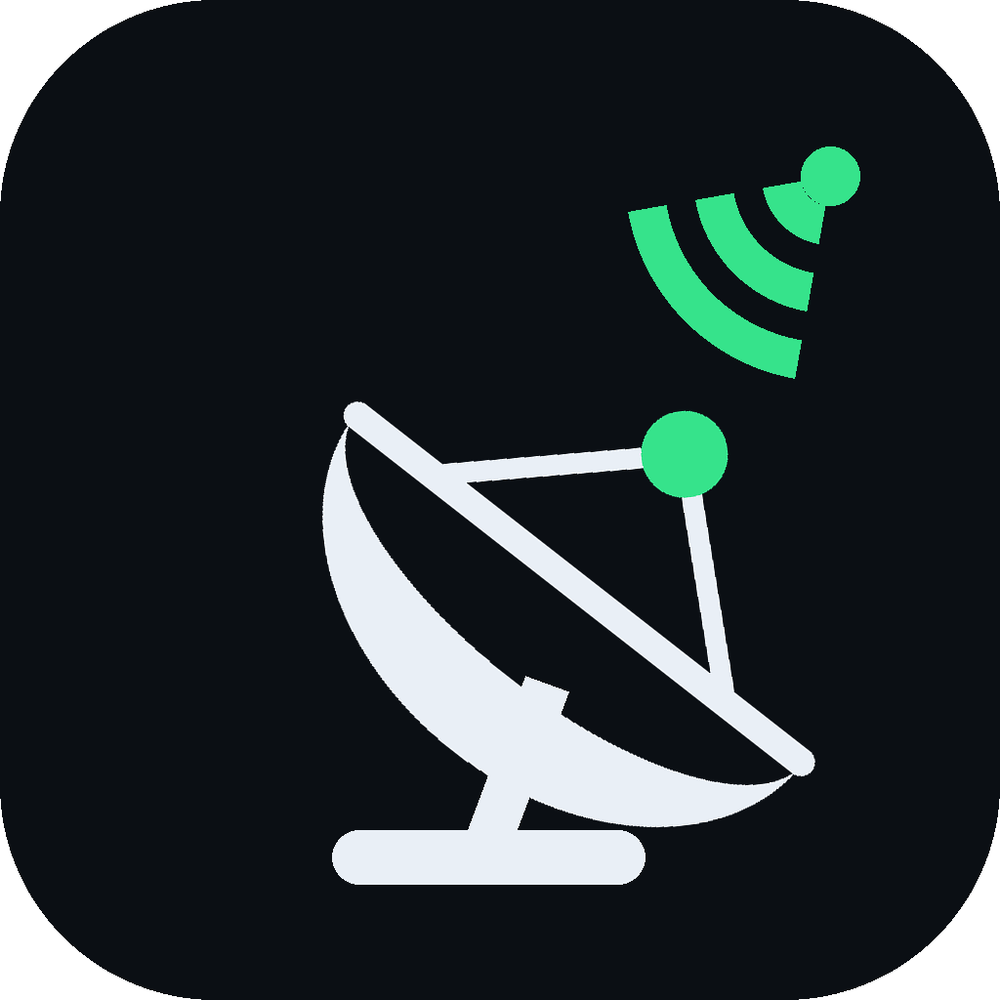
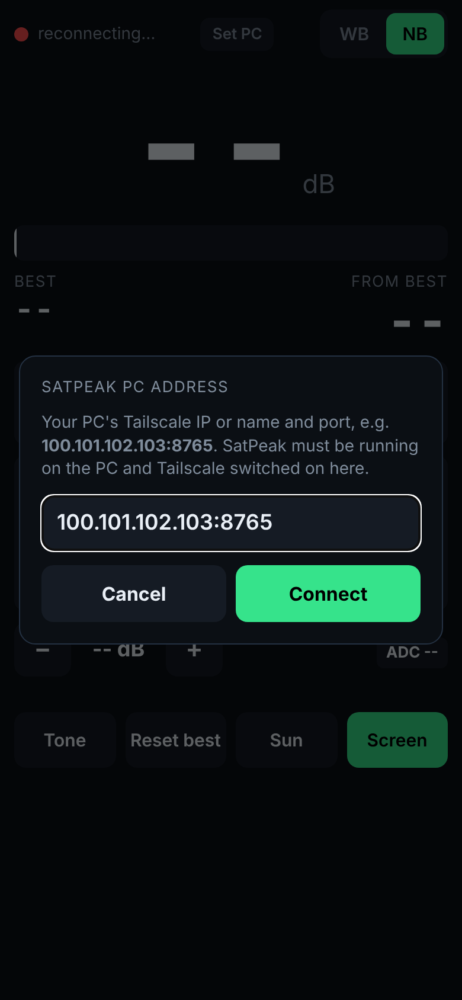
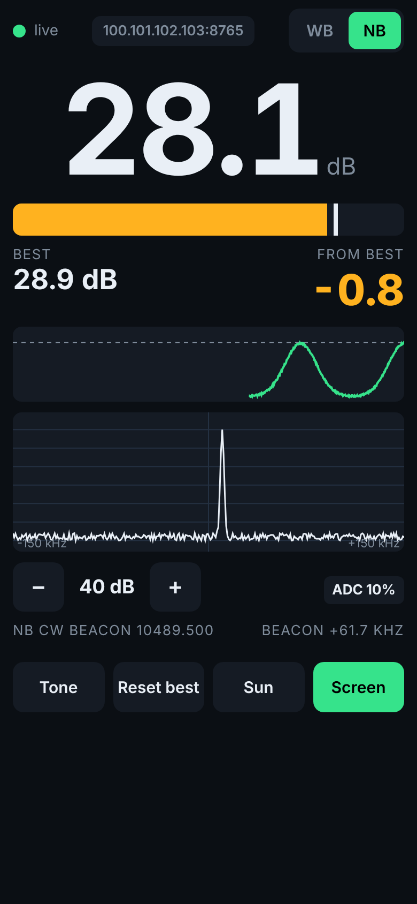

| 1 | What you need |
| 2 | Install on the PC |
| 3 | Install the phone app |
| 4 | The screen explained |
| 5 | Peaking the dish, step by step |
| 6 | Troubleshooting |
| 7 | Advanced options and files |
After that, start SatPeak from the Start menu → SatPeak or the desktop icon. Close the window to stop it. SatPeak (demo mode) runs with a simulated signal, which is handy for testing the phone connection indoors without the Pluto.

With Tailscale on, open the browser and go to:
http://100.101.102.103:8765
The page is the same as the app. Two differences: the screen may dim while you work, so turn up auto-lock before you go out. And the Screen keep-awake button needs HTTPS, which you can set up with tailscale serve.

| Problem | What to do |
|---|---|
| Phone dot stays red ("reconnecting") | Check that Tailscale is on on the phone and that the SatPeak window is open on the PC. Check the address (including :8765). Allow SatPeak in Windows Firewall: Windows Security → Firewall & network protection → Allow an app → tick SatPeak.exe. |
| Dot is amber ("no data") | The PC can't read the Pluto. Look at the SatPeak window for an error. Close other SDR programs, then re-plug the Pluto and restart SatPeak. |
| Window says Could not open the Pluto | The Pluto isn't plugged in, or another program is using it. Try a different USB port or cable. SatPeak (demo mode) confirms that the rest of the system works. |
| Window says Port 8765 is already in use | SatPeak is already running in another window. Close the extra one. |
| Reading is about 0 dB in WB mode | The wideband beacon may be off air. Use NB. If it's also around 8 dB (noise only), check that the LNB is powered and the dish is roughly aimed. |
| NB shows no clear spike | Your LNB may be more than 150 kHz off. Run SatPeak with --lo adjusted, see section 7. Also check that the LNB has power. |
| ADC badge shows CLIPPING | Press − gain until it clears. Clipping flattens the peak and makes peaking impossible. |
| Reading jumps around | Wind, or the dish isn't tight. Use History to judge the average, or run with --smooth 0.2 for more averaging. |
| Android won't install the APK | Allow installs from unknown sources for the app you opened it with (Files, Gmail, Chrome). Android 7 or later is needed. If an older SatPeak is installed with a different signature, uninstall it first. |
SatPeak.exe accepts options. Edit the shortcut's Target or run it from a command prompt in %LOCALAPPDATA%\Programs\SatPeak.
| Option | Meaning |
|---|---|
--demo | Simulated signal; no Pluto needed |
--lo 9750 | LNB local oscillator in MHz (default 9750). Example: --lo 9749.94 corrects signals that appear 60 kHz high . |
--mode nb / wb | Beacon to start on (default nb) |
--gain 40 | Starting receive gain, 0–70 dB |
--uri auto | Pluto address: auto (default), usb:1.1.5 or ip:192.168.2.1 |
--port 8765 | Network port for the phone |
--rate 25 | Updates per second |
--smooth 0.35 | Averaging: 1 = none (fastest), 0.1 = heavy |
| Installed program | %LOCALAPPDATA%\Programs\SatPeak. Uninstall from Settings → Apps or the Start menu. |
| Installer, APK, source | Desktop\SatPeak. Rebuild the installer with build\build_exe.bat. |
| Android signing key | build\android\satpeak-release.p12, alias satpeak, password satpeak-qo100. Keep it safe: updates to the phone app must be signed with the same key. |